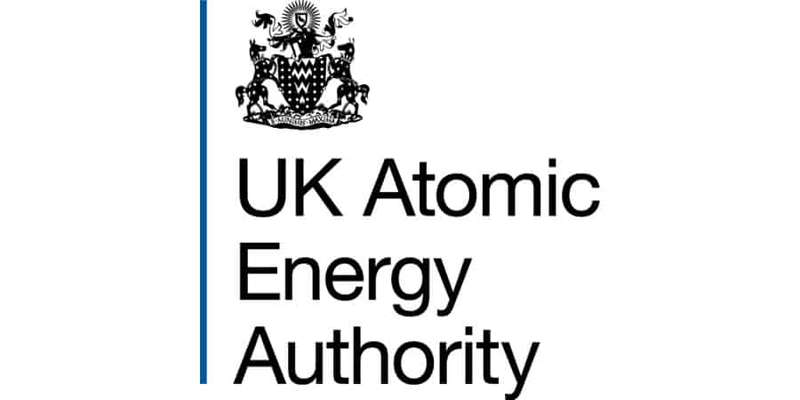

Overview. I spent a year in industry at the UK Atomic Energy Authority — the UK's national fusion
research organisation — working on the structural and thermal finite-element analysis of cryogenic components
for fusion systems, and supporting the mechanical testing that validates them.
What I worked on
Cryogenic finite-element analysis
- Conducted structural and thermal FEA in ANSYS Workbench 2024 R2 on cryogenic components, including cryopanels and tube-to-tubesheet joints.
- Modelled thermal contraction at cryogenic temperatures (−196 °C) and assessed the resulting stresses and load paths — critical where large temperature swings drive failure.
Mechanical testing
- Supported mechanical testing programmes, including shear-load tests of friction-welded joints carried out in accordance with ASME UW-20.
- Interpreted experimental results and correlated them with simulation outputs to support design validation — closing the loop between FEA prediction and physical reality.
Documentation & quality
- Contributed to test specifications, method statements and risk assessments for cryogenic cycling and vacuum / helium leak testing.
- Worked to strict safety, documentation and quality procedures within a regulated nuclear-research environment.
The environment
Fusion research is uncompromising about rigour: components must survive extreme thermal cycles, deep vacuum and cryogenic temperatures, and every analysis and test is documented to a standard. I collaborated daily with multidisciplinary engineers and scientists on fusion-relevant cryogenic systems, and communicated technical findings through formal written reports and presentations on a quarterly reporting cycle.
Skills demonstrated
- Industrial FEA practice — structural and thermal analysis in ANSYS Workbench on real, safety-critical hardware.
- Validation mindset — correlating simulation against physical test data rather than trusting either alone.
- Working to standards — applying codes such as ASME UW-20 and producing controlled engineering documentation.
- Professional maturity — a year operating in a regulated, multidisciplinary, deadline-driven environment.